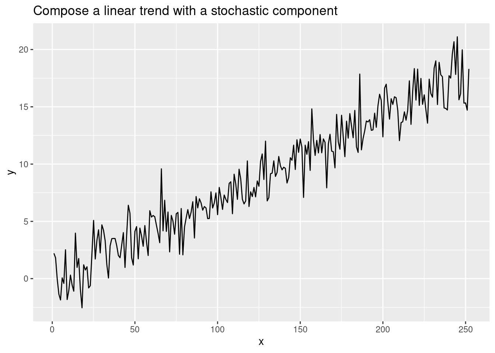
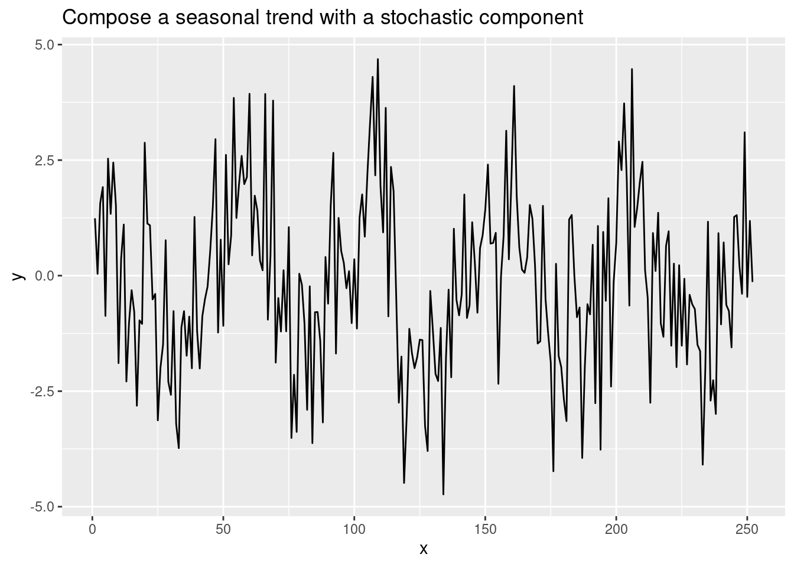

When studying time-series, we usually consider trend and seasonality. With that in mind, we define time-series either in an additive way \[y_t = T_t + S_t + R_t\] or in a multiplicative way \[y_t = T_t \cdot S_t \cdot R_t\]
with
- \(y_t\) : the value of the time-serie at time \(t\)
- \(T_t\) : the trend component at time \(t\)
- \(S_t\) : the seasonal component at time \(t\)
- \(R_t\) : the remainder component at time \(t\)
Note that, using log, we can easily transform a multiplicative time-series into an addidiative one.
\[log(y_t) = log(T_t \cdot S_t \cdot R_t) = log(T_t) + log(S_t) + log(R_t)\]
Because decomposition used averages (for seasonal) and noving average (for trend), decomposition is not robust to outlier (aka, it is very sensitive to outlier)
Time-series composition
Perhaps before to decompose time-series, we can try to compose some dummy time-series in both additive or multiplicative ways.
Compose deterministic time-series (with a trend and a stochastic component)
df <- tibble(x = 1:252, phi = rnorm(252, mean = 0, sd = 1.5)) |>
mutate(y = 0.07 * x + 0.03 + phi)
ggplot(df, aes(x, y)) +
geom_line() +
ggtitle(label = 'Compose a linear trend with a stochastic component')
We could also create a seasonal time-series with a stochastic component.
df <- tibble(x = 1:252, phi = rnorm(252, mean = 0, sd = 1.5)) |>
mutate(y = 1.7 * sin((2 * pi * x / 50) + 0.3 * pi ) + phi)
ggplot(df, aes(x, y)) +
geom_line() +
ggtitle(label = 'Compose a seasonal trend with a stochastic component')
Decomposing a time-series.
In R using standard library
Let’s go back to the milk example which looks like this.
library(readr)
milk <- read_csv('../../../raw_data/milk.csv')
head(milk)# A tibble: 6 × 2
month milk_prod_per_cow_kg
<date> <dbl>
1 1962-01-01 265.
2 1962-02-01 252.
3 1962-03-01 288
4 1962-04-01 295.
5 1962-05-01 327.
6 1962-06-01 314.ggplot(milk, aes(x = month, y = milk_prod_per_cow_kg)) +
geom_line()
If we transform our tibble into a time-series df, then we can use the decompose() function.
ts_milk <- ts(milk$milk_prod_per_cow_kg, start = c(1962, 1, 1), frequency = 12)
milk_dec <- decompose(ts_milk, type = 'additive', filter = NULL)
plot(milk_dec)And now, we can use our decomposed time-series to detrend or remove seasonality
milk_adj <- ts_milk - milk_dec$seasonal
plot(milk_adj)The timtk package can achieve the same output in a more direct way as timetk fit the tidyverse framework.
library(timetk)
milk |>
plot_stl_diagnostics(month, milk_prod_per_cow_kg, .frequency = 12)frequency = 12 observationstrend = 60 observations per 5 yearsIt should be noted that the timetk package use a Seasonal-Trend-Loess decomposition (STL). If we want to get the values, we use the tk_stl_diagnostics(date, value) function.
(From FPP 3rd ed. )While loess is a method for estimating nonlinear relationships. The STL method was developed by R. B. Cleveland et al. (1990).
STL has several advantages over classical decomposition:
- STL will handle any type of seasonality, not only monthly and quarterly data.
- The seasonal component is allowed to change over time, and the rate of change can be controlled by the user.
- The smoothness of the trend-cycle can also be controlled by the user.
- It can be robust to outliers (i.e., the user can specify a robust decomposition), so that occasional unusual observations will not affect the estimates of the trend-cycle and seasonal components. They will, however, affect the remainder component.
head(milk |> tk_stl_diagnostics(month, milk_prod_per_cow_kg))frequency = 12 observations per 1 yeartrend = 60 observations per 5 years# A tibble: 6 × 6
month observed season trend remainder seasadj
<date> <dbl> <dbl> <dbl> <dbl> <dbl>
1 1962-01-01 265. -8.44 272. 1.81 273.
2 1962-02-01 252. -27.2 272. 7.15 280.
3 1962-03-01 288 15.5 273. -0.726 273.
4 1962-04-01 295. 22.4 274. -1.18 273.
5 1962-05-01 327. 50.0 275. 2.42 277.
6 1962-06-01 314. 37.3 276. 0.815 276.Moving averages
There are so many packet in R to calculate moving averages. We’ll keep using the timetk package
yo <- milk |>
mutate(ma_3m = slidify_vec(.x = milk_prod_per_cow_kg, .f = mean, .period = 3, .align = 'right'))